A2 / Figure + text-only specimens / light


Phase 1 visual review. Two compositions, both themes, both target widths, and sparse-content states. Click any preview for its full-resolution original. Case studies are fixtures; the figure is supplied planning material, not an implemented project.
Interactive A1 · Interactive A2 · Sparse A1 · Sparse A2
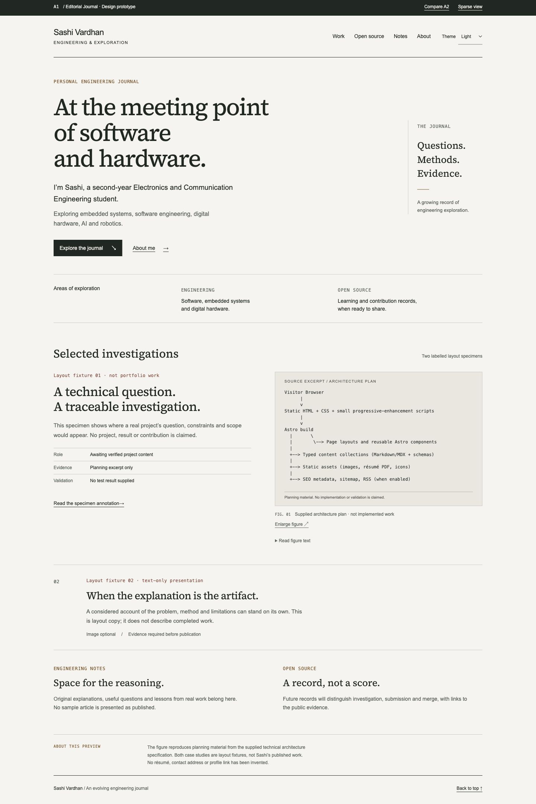
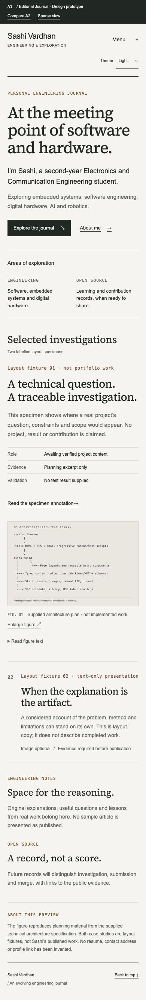
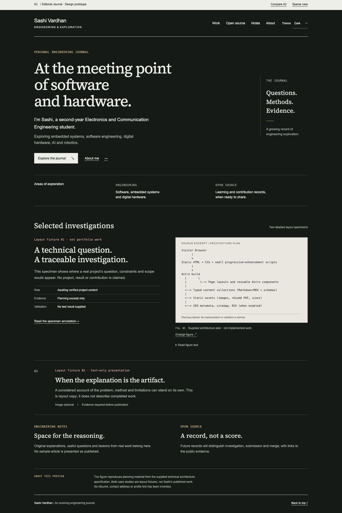
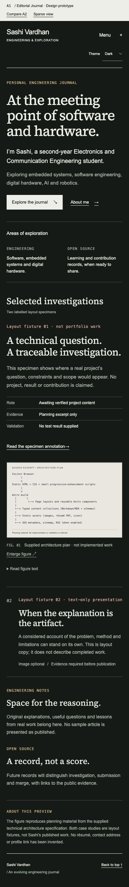
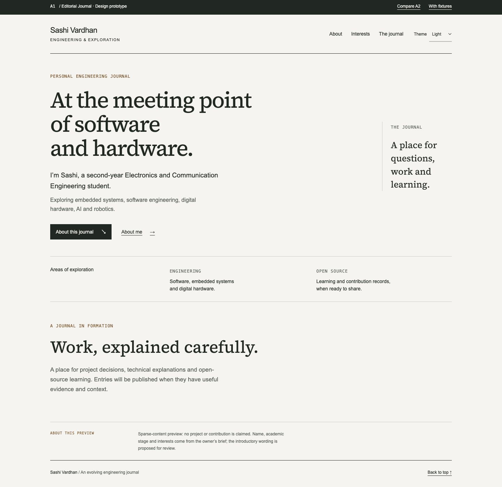
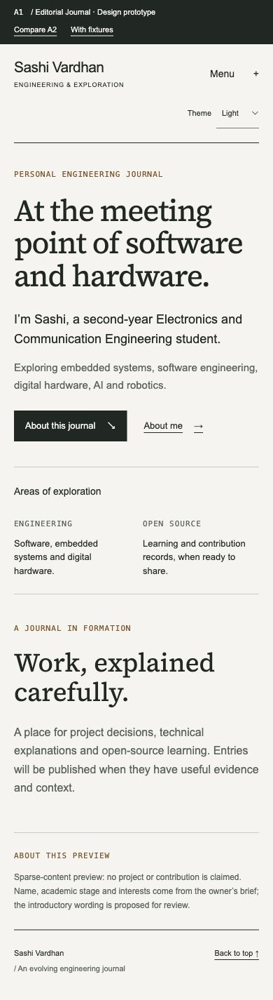
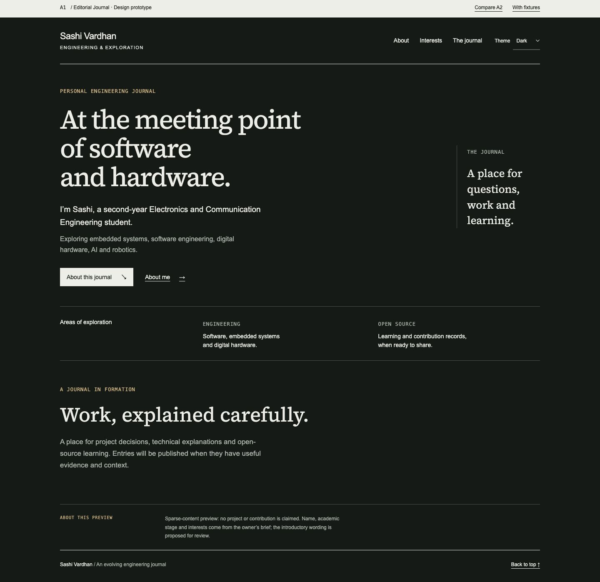
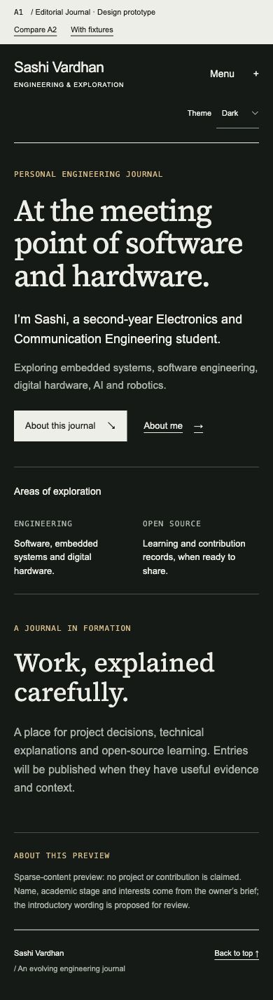
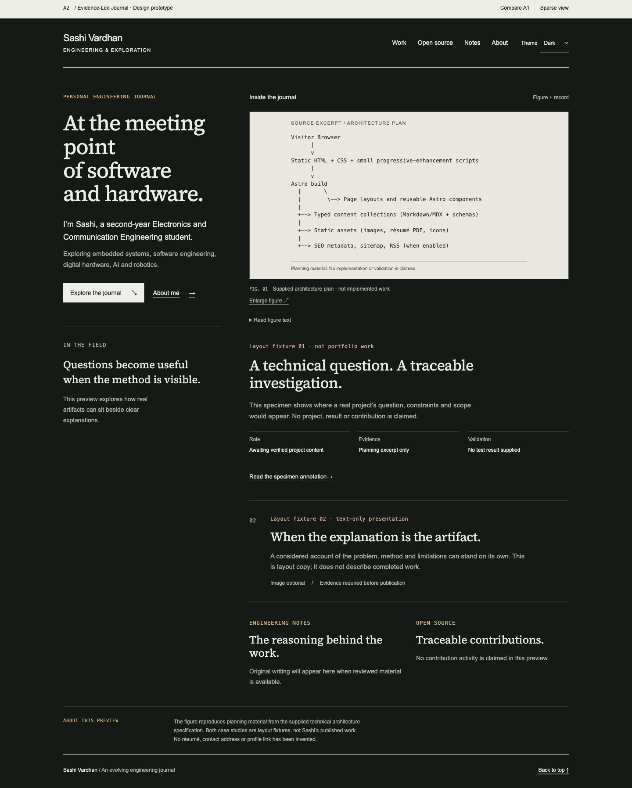
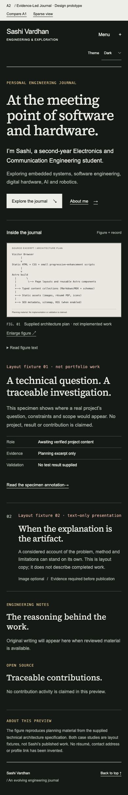
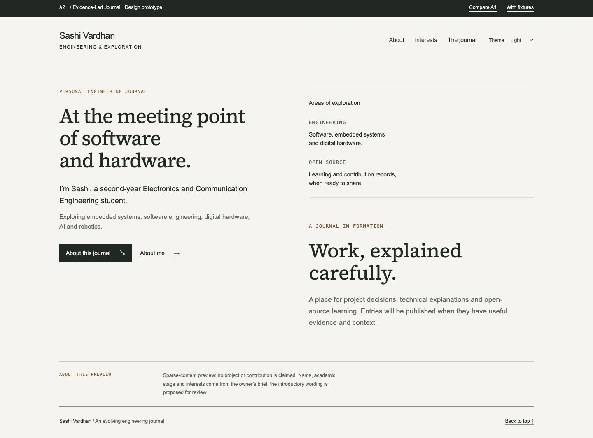
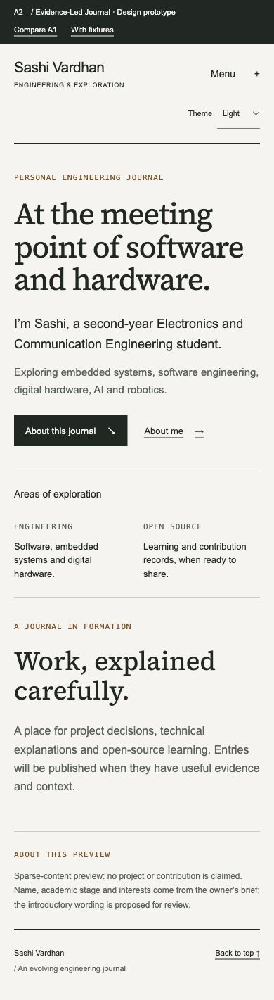
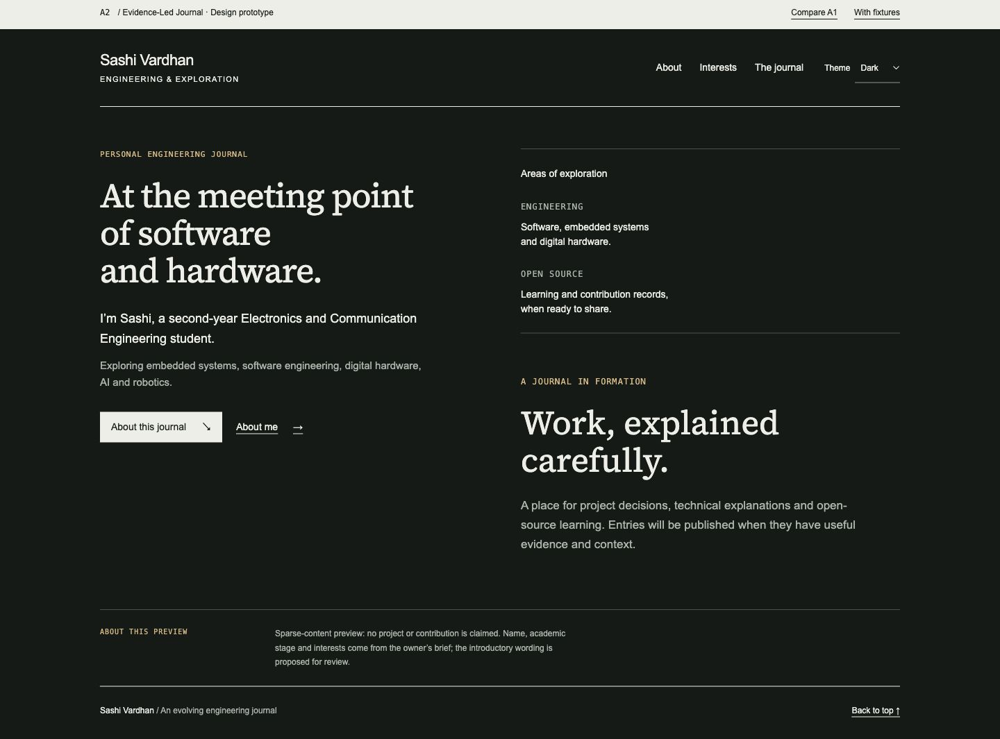
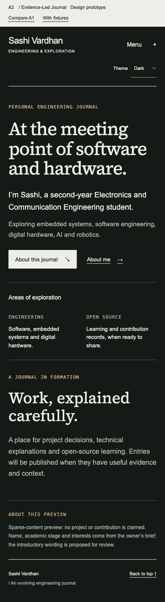